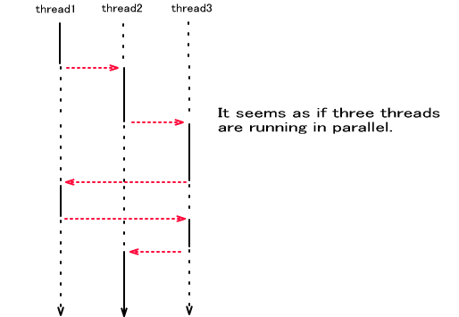
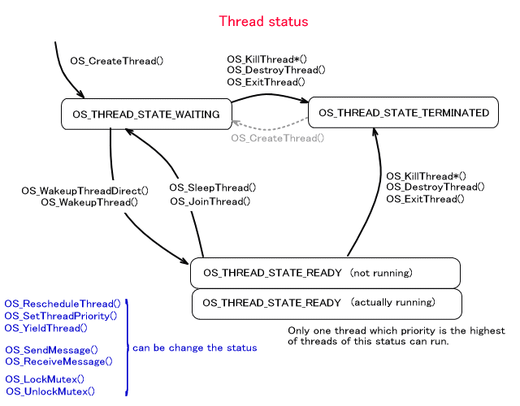
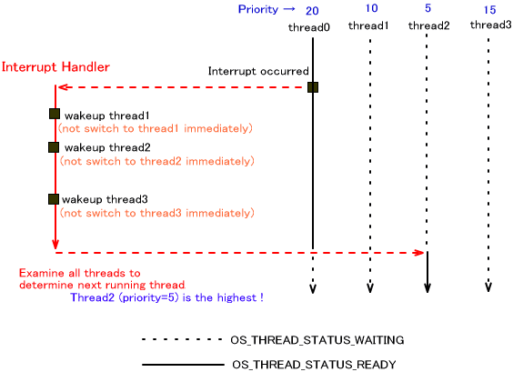
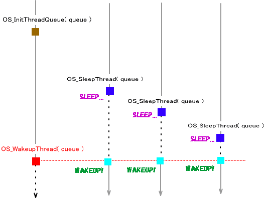
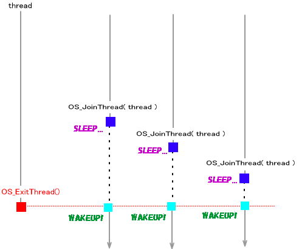

A thread system is provided in the NitroSDK. Thread has independent context and allows parallel operation using one CPU operation on multiple modules by dividing the tasks and processing of data into smaller chunks.

The number of threads is limited only by whether their is enough memory for the thread structures and stacks.
Call OS_InitThread() to initialize the thread system. Since calling OS_Init() will initialize the thread system by default, there is no need to call it in the application.
Use OS_IsThreadAvailable() to check whether or not the thread system has been initialized.
When the thread system is initialized, two threads are created: the thread for the program that called OS_InitThread()OS_GetNumberOfThread().
Thread State
The threads created with OS_CreateThread()OS_WakeupThreadDirect()
Priorities are set in the thread. Among the threads in an executable state, the one with the highest priority enters an executable state. The priority is set when the thread is created, but it can be changed during processing by using OS_SetThreadPriority()
Also, an idle thread with a special priority of 32 is created. This thread does nothing. (This is sometimes called an idle thread.))
Thread priorities can be obtained with OS_GetThreadPriority()
If a thread is ended with OS_ExitThread()
In the case where a thread completes execution of a function task, processing is identical to when OS_ExitThread() is called.
The functions OS_DestroyThread() and OS_KillThread*() are provided to terminate other threads. For information on the differences between the two, see the Thread Destructor section.
Switching Threads
Below is a list of events that can cause thread switching (rescheduling).
A thread was put in an executable state. In other words, either OS_WakeupThread()OS_WakeupThreadDirect()OS_SleepThread()OS_JoinThread() was called. A thread has ended. The function operating in the thread has reached its final position and OS_ExitThread()OS_RescheduleThread() was called. A thread thought to be the same level of priority has been explicitly rescheduled. In other words, OS_YieldThread() was called. A thread priority has changed. In other words, OS_SetThreadPriority() was called. - The thread was terminated by another thread. In other words, either OS_KillThread*()OS_DestroyThread()
Thread switching also occurs if the message functions OS_SendMessage()OS_ReceiveMessage()
There are also times when thread switching occurs due to thread exclusion control via mutex. This switching occurs when a thread is locked with OS_LockMutex()OS_UnlockMutex()OS_TryLockMutex().)
Rescheduling threads can be paused with OS_DisableScheduler() and resumed with OS_EnableScheduler(). For details, see the section on Pausing Rescheduling in this document.

Interrupts and Switching Threads
Even if the function that causes thread switching is called inside the interrupt handler, the thread is not switched immediately. Such event occurences are remembered, and control moves to the highest priority executable thread when exiting from the handler.
In the example below, a function has been called that can switch between threads thread1, thread2, and thread3 three times, but the function does nothing when called. After exiting from the interrupt handle, all threads are examined and a thread is selected to be executed from among the executable threads. Note that switching does not occur immediately even if a thread with a higher priority has been started inside the interrupt handler.

In this way, threads may be switched with interrupts, so you must prohibit interrupts in places that perform processing where you do not want thread switching to occur. (It is not necessary to disable interrupts if the logic to allow thread switching in interrupt handlers does not exist. However, because it is difficult to keep perfect track of the operation of all interrupt handlers in the system and the application, disabling interrupts in these cases is a good a general rule.)
Waking Up All Threads
Until control moves to a location where there is a separate thread, there may be cases where that thread wants to stop its execution. There may also be cases where multiple threads are to be awakened at the same time. In such cases, the thread queue is convenient.
By initializing the thread queue with OS_InitThreadQueue()OS_SleepThread()OS_WakeupThread()OS_WakeupThread()

Thread Joining
It it possible to pause the currently running thread until another thread has completed. This operation makes it appear as if the completed thread and the waiting thread were joined, so this is known as "thread joining" throughout the reference materials. Thread joining is performed by using the thread queue in which all threads wait.
Consider the combination of thread1 and thread2 (thread2 becomes executable when thread1 completes). Use OS_JoinThread()thread 2 in thread1's thread queue. When thread1 completes, it references the thread queue and makes all items registered there (if any) executable. thread2 is registered, so thread2 becomes executable.
While multiple threads can be joined to one thread, it is not possible to join one thread to multiple threads. The following is an example of joining multiple threads to one thread.

Wait by sleeping
It is possible to designate a time and use OS_Sleep()OS_InitTick()OS_InitAlarm()
Pausing Rescheduling
A function for pausing rescheduling and a function for resuming rescheduling are provided.
When rescheduling has been paused, rescheduling will not be performed even when functions like OS_WakeupThread and OS_SetThreadPriority that can cause thread rescheduling are called. Also, rescheduling will not occur even in situations where rescheduling can occur, such as when the thread ends. Use caution because it is possible to run out of threads and stop the program, depending on the conditions when called.
The function to pause rescheduling is OS_DisableScheduler().
The function for resuming rescheduling is OS_EnableScheduler().
These functions must be called while the interrupts are prohibited.
Explicit Rescheduling
The functions for conducting explicit scheduling are OS_RescheduleThread() and OS_YieldThread().
If scheduling has not been prohibited, OS_RescheduleThread() will transfer CPU execution rights to the executable thread with the highest priority. (However, if the function has been called from the interrupt handler, the actual rescheduling process will be conducted later.))
If two or more of the executable threads have the same highest level of priority, the thread is selected based on the order of the internally maintained thread information. The threads are managed as a list, sorted according to the order of priority with the highest-priority thread placed at the top of the list. OS_RescheduleThread() goes down the list from the beginning and transfers execution rights to the first executable thread it finds. Thus, even if two threads have the same level of priority, the function always selects the one that is placed higher on the list.
In contrast, if there is another executable thread that has the same level of priority as the current thread, OS_YieldThread() will reattach the current thread to the bottom of the list (i.e., to the bottom of the part if the list where threads of the same priority sit; not to the very bottom of the list) and then call OS_RescheduleThread(). )、 This process is performed to give other threads with the same level of priority a chance to execute.
Note that the thread may not always switch with OS_RescheduleThread() and OS_YieldThread(). If the currently executing thread is selected to run after searching for the next thread based on the priority and list order, the currently executing thread will continue. If there is no other thread to run,iIt will also continue to run.
Thread destructor
A thread destructor can be set to a thread. The thread destructor is a function that is called when the thread ends, and is a void type function that takes a single void* argument. However, it is called in the following situations. 、
-When the thread finishes executing its task
-When it ended withOS_ExitThread()
-When it was terminated from another thread withOS_KillThread*()
- When it terminated itself withOS_KillThread*()
A destructor function is not called in the following situations.
・When the thread was terminated by another thread usingOS_DestroyThread()
-When the thread terminated itself usingOS_DestroyThread()
When the destructor function is executed, execution switches to the context of the thread that ends. When killed by another thread, it changes to the highest stack (excluding code for checking) or to the separately prepared stack used exclusively for the execution of the destructor function. When a thread kills itself, the stack is unchanged, or it changes to the separately prepared stack used exclusively for the execution of the destructor function. This specification is done using OS_SetThreadDestructorStack().
When the destructor function is executed, thread priority is not changed with OS_KillThread(); but with OS_KillThreadWithPriority(), the thread priority is changed to the specified value.
With OS_KillThread*(), the user can provide an optional void* value. This value is the argument is used when the destructor function is called. If a thread's task finishes execution or when terminating with OS_ExitThread(), NULL is passed.
The function that sets a thread destructor for a thread is OS_SetThreadDestructor().
08/09/2005 Fixed stack during execution of thread destructor.
07/07/2005 Added text about thread destructor.
07/06/2005 Removed restrictions on number of threads.
06/20/2005 Added explicit rescheduling.
03/08/2005 Standardized Japanese spelling of "interrupt."
01/21/2005 Added text about pausing and resuming rescheduling.
12/14/2004 Revised terms and word endings.
11/09/2004 Initial version.
CONFIDENTIAL